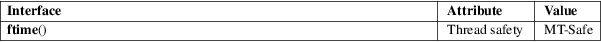

ftime − return date and time
Standard C library (libc, −lc)
#include <sys/timeb.h>
int ftime(struct timeb *tp);
NOTE: This function is no longer provided by the GNU C library. Use clock_gettime(2) instead.
This function returns the current time as seconds and milliseconds since the Epoch, 1970-01-01 00:00:00 +0000 (UTC). The time is returned in tp, which is declared as follows:
struct timeb {
time_t time;
unsigned short millitm;
short timezone;
short dstflag;
};
Here time is the number of seconds since the Epoch, and millitm is the number of milliseconds since time seconds since the Epoch. The timezone field is the local timezone measured in minutes of time west of Greenwich (with a negative value indicating minutes east of Greenwich). The dstflag field is a flag that, if nonzero, indicates that Daylight Saving time applies locally during the appropriate part of the year.
POSIX.1-2001 says that the contents of the timezone and dstflag fields are unspecified; avoid relying on them.
This function always returns 0. (POSIX.1-2001 specifies, and some systems document, a −1 error return.)
For an explanation of the terms used in this section, see attributes(7).

None.
Removed in glibc 2.33. 4.2BSD, POSIX.1-2001. Removed in POSIX.1-2008.
This function is obsolete. Don’t use it. If the time in seconds suffices, time(2) can be used; gettimeofday(2) gives microseconds; clock_gettime(2) gives nanoseconds but is not as widely available.
Early glibc2 is buggy and returns 0 in the millitm field; glibc 2.1.1 is correct again.
gettimeofday(2), time(2)